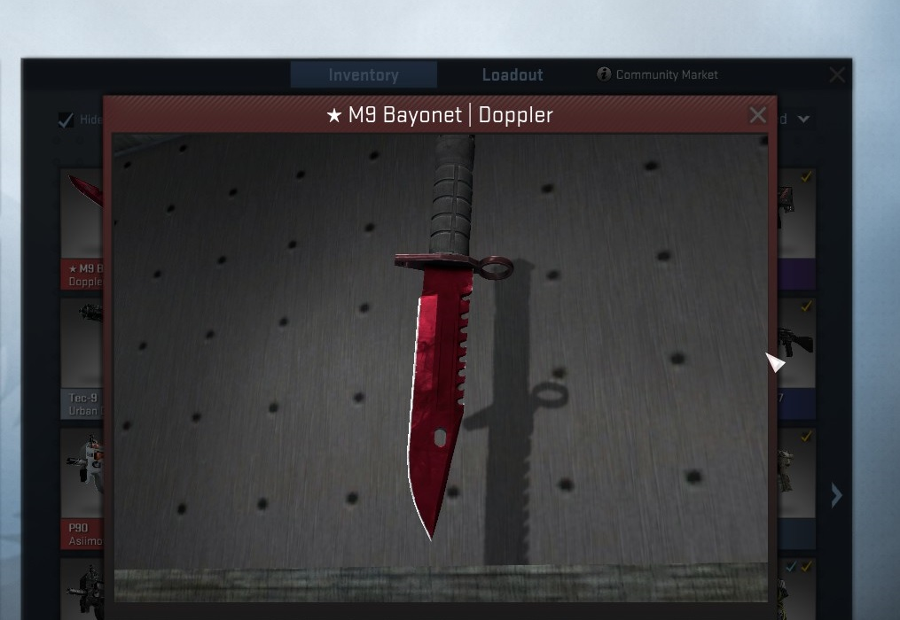

High risk and high reward, the infamous AWP is recognizable by its signature report and one-shot, one-kill policy. It has been custom painted with a knotwork dragon. 200 keys could never unlock its secrets
The Cobblestone Collection

This is the M-9 bayonet. Originally intended to be mounted on a rifle, it is also well suited to close-quarters combat. It has been painted with black and silver metallic paints using a marbleizing medium, then candy coated. Getting lost in its color can prove fatal

Powerful and reliable, the AK-47 is one of the most popular assault rifles in the world. It is most deadly in short, controlled bursts of fire. This memento from Ruins has been painted with a fire serpent motif. If you want to survive in the streets, learn to spit fire.
The Bravo Collection